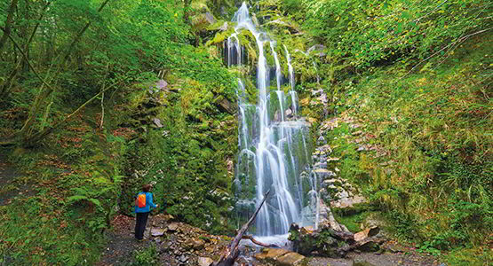

|  | Recientemente estos caminos han sido tomados por ti, por mí, por todos los senderistas que disfrutamos de la naturaleza asturiana, pero no debemos olvidar que tenemos que hacerlo con responsabilidad y seguridad. La responsabilidad de saber que muchos de estos caminos están en espacios naturales y que en éstos no podemos caminar por donde queramos. Que muchos de estos caminos tienen unos límites que no podemos traspasar para no perturbar la naturaleza, por lo que es imprescindible ponernos antes en contacto con quien nos pueda asesorar al respecto en cada espacio natural. Para eso están los Centros de Interpretación o la dirección de los espacios, si fuera necesario. |